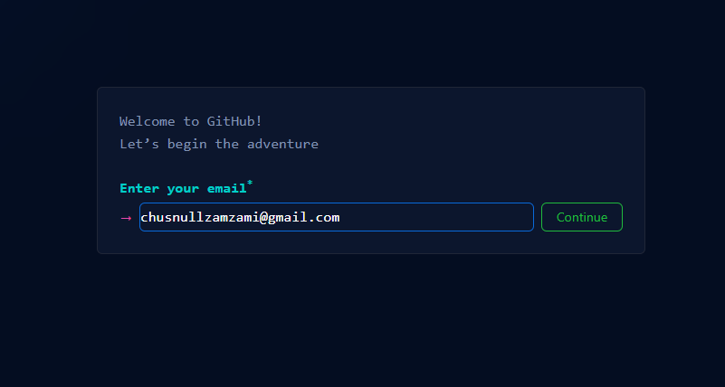
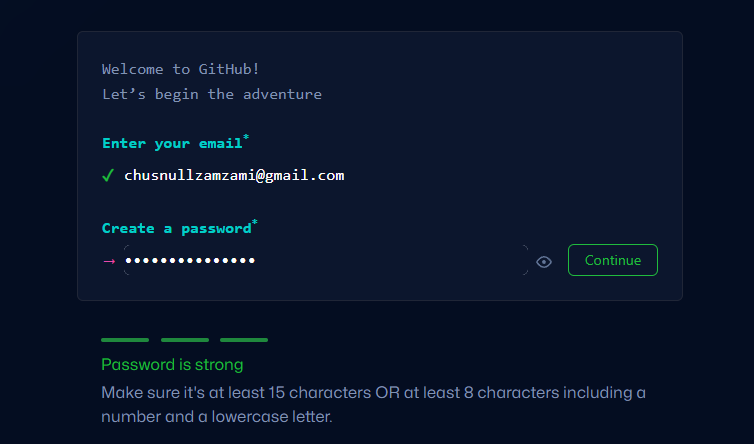
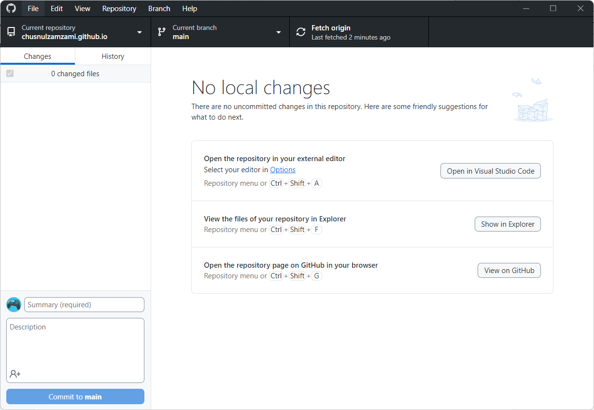

Laporan III Pratikum Sistem Paralel dan Terdistribusi
PENGENALAN GITHUB
Disusun untuk memenuhi tugas mata kuliah
Sistem Paralel dan Terdistribusi
Oleh:
CHUSNUL ZAMZAMI
(2208001010026)

PROGRAM STUDI DIII MANAJEMEN INFORMATIKA
JURUSAN INFORMATIKA
FAKULTAS MATEMATIKA DAN ILMU PENGETAHUAN ALAM
UNIVERSITAS SYIAH KUALA
BANDA ACEH, SEPTEMBER 2024
PEMBAHASAN
1. GitHub
GitHub adalah platform berbasis web yang digunakan untuk pengembangan perangkat lunak dan versi kontrol (version control) menggunakan Git. GitHub memungkinkan kolaborasi antara banyak pengembang, serta menyimpan dan mengelola kode sumber proyek secara aman.
2. Fungsi utama GitHub:
- Repositori: Tempat penyimpanan proyek atau kode, yang bisa diakses dan dikelola oleh pengembang.
- Version Control: Setiap perubahan pada kode dapat dilacak, dan pengembang dapat mengembalikan versi sebelumnya jika terjadi kesalahan.
- Branching dan Merging: Pengembang dapat bekerja pada fitur atau perbaikan yang berbeda dalam "branch" terpisah, kemudian menggabungkan (merge) perubahan tersebut ke dalam branch utama setelah selesai.
- Pull Request: Fitur untuk mengusulkan perubahan yang dapat ditinjau dan disetujui oleh tim sebelum diintegrasikan ke dalam proyek utama.
- Collaboration Tools: GitHub menyediakan fitur-fitur seperti penugasan masalah (issues), diskusi, serta fitur kolaborasi lainnya untuk memudahkan koordinasi antar anggota tim.
3. Keunggulan GitHub
- Version Control yang Efektif: GitHub menggunakan Git untuk manajemen versi, memungkinkan pengembang melacak perubahan, memulihkan versi sebelumnya, dan bekerja pada beberapa fitur secara bersamaan dengan mudah melalui branching.
- Kolaborasi yang Mudah: Fitur seperti pull requests dan issue tracking mempermudah kolaborasi antar anggota tim, baik dalam proyek lokal maupun global, sehingga memfasilitasi diskusi dan review kode secara efisien.
- Manajemen Proyek Terorganisir: GitHub menyediakan alat seperti milestones dan kanban boards yang membantu perencanaan, penugasan tugas, dan pemantauan kemajuan proyek, meningkatkan produktivitas tim.
- Komunitas Open Source: Dengan jutaan proyek open source, GitHub memungkinkan pengembang untuk berkontribusi, belajar dari komunitas, dan berbagi pengetahuan serta pengalaman.
- Integrasi dengan Alat Lain: GitHub mendukung integrasi dengan berbagai alat pengembangan, seperti layanan CI/CD dan IDE, yang menyederhanakan alur kerja pengembang dan meningkatkan efisiensi.
- Keamanan dan Privasi: GitHub menawarkan repositori privat dan alat pemindai kerentanan, memberikan kontrol lebih besar atas keamanan kode dan melindungi proyek dari akses yang tidak diinginkan.
- Review Kode yang Terstruktur: Fitur pull request memungkinkan pengembang mengusulkan perubahan untuk ditinjau sebelum diintegrasikan, menjaga kualitas kode dan mencegah kesalahan.
- Paket Gratis dan Fleksibel: GitHub menyediakan paket gratis untuk pengguna individu dan proyek open source, serta opsi berbayar untuk tim dan perusahaan yang memerlukan fitur tambahan.
4. Membuat Akun GitHub
- Hal pertama yang dilakukan untuk membuat akun GitHub yaitu search GitHub di browser, atau bisa juga klik link ini https://github.com/
- Kemudian nanti akan di arahkan ke laman githubnya seperti gambar di bawah ini, lalu klik sign up untuk membuat akun githubnya.
- Lalu masukkan email Anda, pastikan akun email yang dimasukkan aktif karena nanti akan dimintai kode verifikasi yang akan dikirim melalui email tersebut.
- Setelah memasukkan email, langkah selanjutnya yaitu membuat password, pastikan password yang dimasukkan itu bersifat sulit, berikan kombinasi simbol, angka, huruf besar, dan huruf kecil agar memastikan password tersebut sangat sulit untuk diakses oleh orang lain. Jangan lupa juga untuk mencatat email dan password akun tersebut agar tidak lupa, setelah itu klik continue.
- Jika akun telah selesai dibuat, maka tahapan selanjutnya yaitu masuk menggunakan akun yang baru saja dibuat, nanti akan diminta kode verifikasi lewat email Anda.
- Akun GitHub pun telah berhasil dibuat.



5. Membuat repository baru
- Pertama buka web GitHub dan login.
- Setelah berhasil login, nanti akan masuk ke dalam GitHub seperti tampilan gambar di bawah ini.
- Kemudian klik ikon + pada bagian kanan atas dan klik new repository.
- Masukkan nama repository sesuai dengan nama akun GitHub yang Anda punya dan diakhiri dengan .github.io, seperti contohnya di sini nama akun GitHub saya yaitu chusnulzamzami, maka saya berikan nama repository-nya yaitu chusnulzamzami.github.io. Berikan deskripsinya, ini bersifat opsional, dan klik menjadi public, kemudian klik create repository.
- Repository pun telah berhasil dibuat.


6. Mengisi dan mengatur web yang ingin kita buat ke dalam repository
- Masuk ke dalam file explorer - Document - Github - chusnulzamzami.github.io.
- Kemudian nanti di laman inilah kita bisa membuat web sesuai dengan keinginan kita, misalnya di sini saya ingin membuat web berbasis HTML sederhana untuk penampilan sederhana saja, seperti contoh gambar di bawah ini.
- Dan isi code-nya akan seperti ini.


7. Membuat domain gratis dari GitHub
- Hal yang pertama dilakukan yaitu mendownload aplikasi GitHub Desktop.
- Setelah berhasil diunduh, maka nanti akan ada tahapan login akun, masukkan akun GitHub yang sebelumnya telah dibuat ke dalam aplikasi GitHub Desktop.
- Kemudian nanti akan diminta untuk mengaitkan repository yang sebelumnya telah kita buat. Jika repositorinya telah dikaitkan, maka nanti tampilnya akan seperti gambar di bawah ini.
- Kemudian di sinilah untuk meng-publish repository kita ke publik seluruh dunia melalui Google.com dan mesin pencarian lainnya.
- Cara nya yaitu setelah kita membuat web pada laman github.io kita, maka nanti bisa klik pada bagian commit to main , lalu klik fetch origin.
